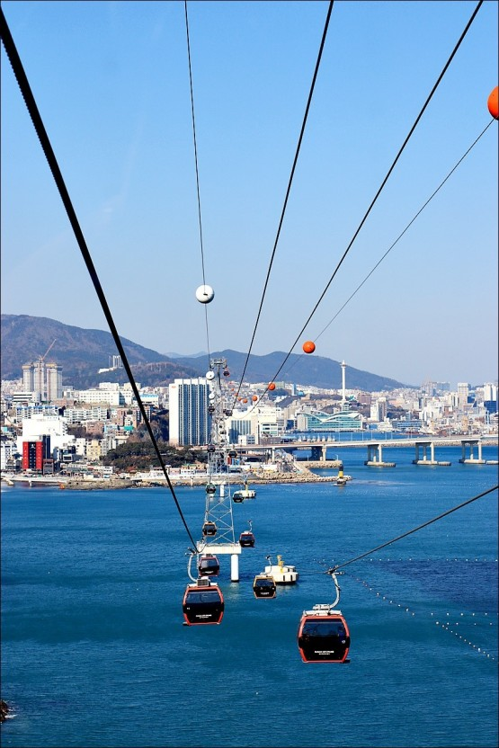
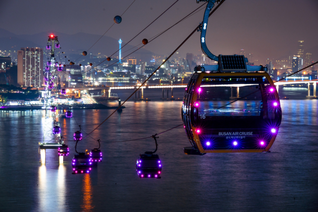
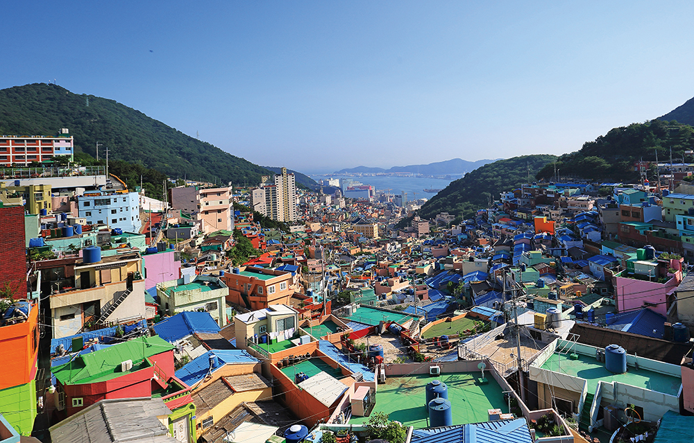

부산 영도를 한눈에 감상할 수있는 송도해상케이블카!
부산 송도해수욕장에 위치한 송도해상케이블카는 송도해수욕장 동쪽 송림공원에서 서쪽 암남공원까지 1.62km 바다 위를 가로질러 운행합니다. 최고 86m 높이의 바다 한가운데에서 하늘을 날으는 짜릿함과 동시에 송도해수욕장, 부산 영도와 남항대교, 송도용궁구름다리, 파도치는 기암 절벽까지 한눈에 감상 할 수 있습니다.
송도해상케이블카는 케이블카 뿐만 아니라 거대한 공룔들이 소리를 내며 움직이는 다이노 어드벤처와 동화속 어린왕자를 주인으로 한 어린왕자 테마존, 국내 최초의 케이블카 뮤지엄 송도도펠마이어월드 등 다양한 테마시설을 함께 체험할 수 있습니다.
패키지 예약하기

6.25 전쟁을 겪은 피난민들의 터전으로 역사적인 의미가 있는 장소인 감천문화마을!
산자락을 따라 질서정연하게 늘어선 계단식 집단 주거형태와 모든 길이 통하는 미로미로 골목길의 경관은 감천만의 독특함을 보여줍니다.
감천의 이런 특색과 역사적 가치를 살리기 위해 지역 예술인들과 마을 주민들이 모여 시작한 프로젝트는 감천문화마음 만들기 사업의 디딤돌이 되었으며 이 사업을 시작으로 각종 공모사업을 유치하여 2019년에는 308만여명이 방문하는 명소가 되었습니다. 감천문화마을이 만들어지기까지 함께 고민하고 힘써 주신 마을주민들과 마음만들기 계획가 및 활동가, 예술가들, 그리고 구청 및 동주민센터 공무원들이 노력중입니다.
패키지 예약하기

밤에 볼수있는 멋진 야경이 있는 낭만과 감성이 존재하는 광안리 해수욕장!
광안리 해변을 따라 조성된 해변 테마거리는 광안리의 자랑입니다. 이 거리는 부산시민들이 사랑하는 휴식처 중 하나이기도 하며 반려견과 함께 바닷가를 산책하기도 하고 자전거를 즐기는 이들도 많이 있습니다.
광안리 근처에는 바다 전망을 가진 카페나 식당이 많이 있으며 민락횟집거리를 포함하여 백사장 끝에 위치한 회타운에서 싱싱한 활어회와 제철 해산물을 맛볼 수 있으며 어두운 밤에는 불을 밝힌 간판과 네온사인, 반짝이는 광안대교의 조명까지 낭만적인 분위기를 느낄 수 있습니다.
패키지 예약하기